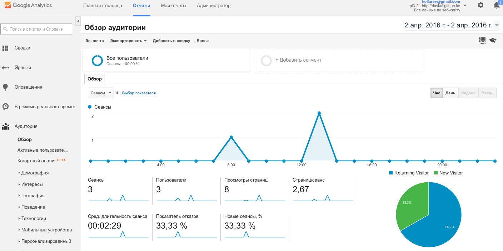

Github - один из крупнейших сервисов для создания и хостинга проектов. Сервис имеет как бесплатные функции, так и платные.Также есть возможность редактирования программного кода и готовый шаблоны html и css . Кроме того, он имеет инуитивно понятный интерфейс.
Для аналитики было использовано решение google analytics прилагаю скрин работы аналитики, а также специальный скрипт для отображения текущих пользователей и их местоположение.

©